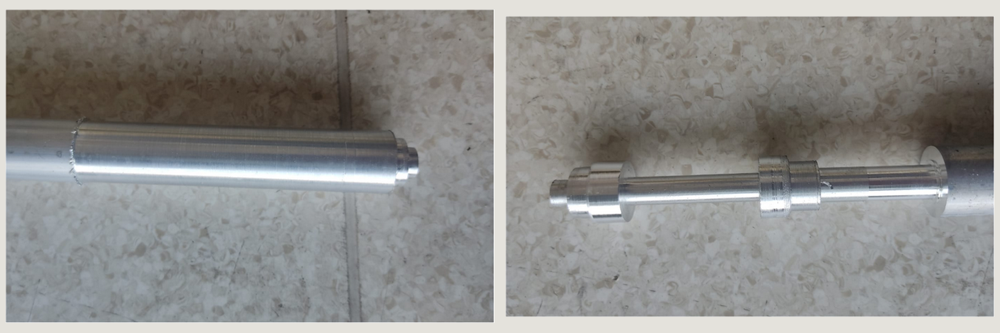

Project
Design and manufacture a dumbbell respecting dimensional specifications and technical tolerances defined in the drawings.
The part CAD model was developed and technical drawings with specified tolerances were generated. It is currently in the manufacturing process through operations that seek to meet the dimensions and fits defined in the design.
Part design and execution of the manufacturing process using a lathe.
Project in development with fabrication in progress according to the design specifications.